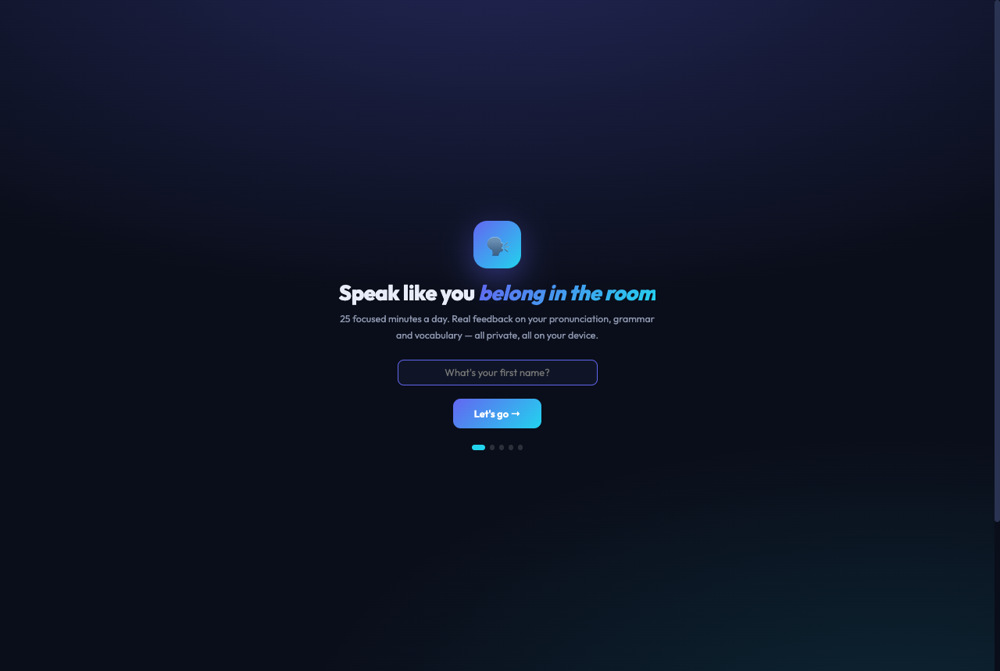
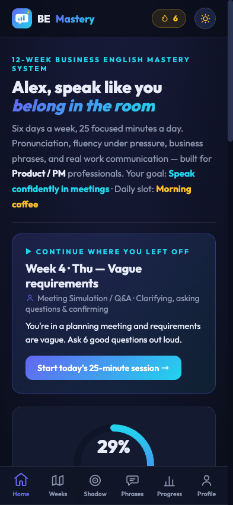
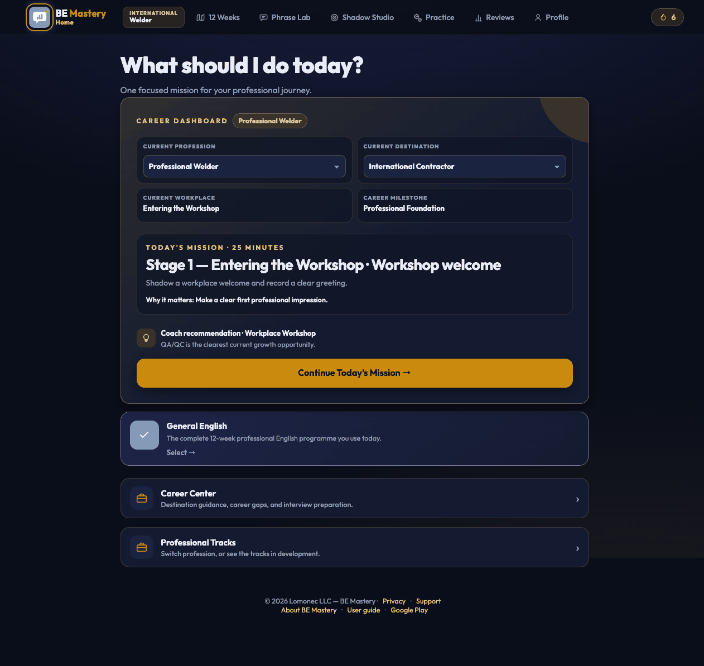
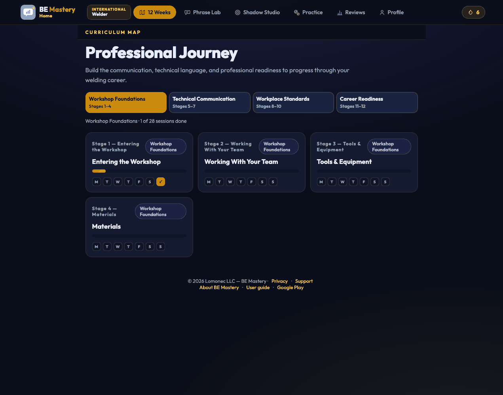
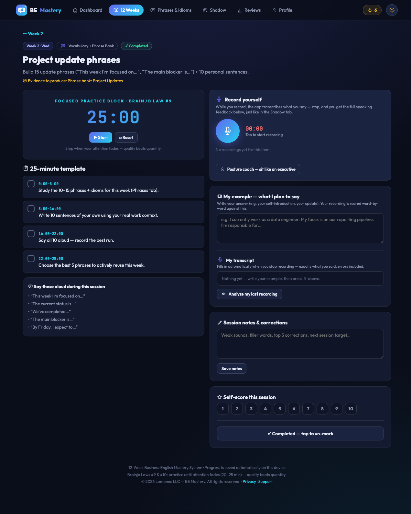
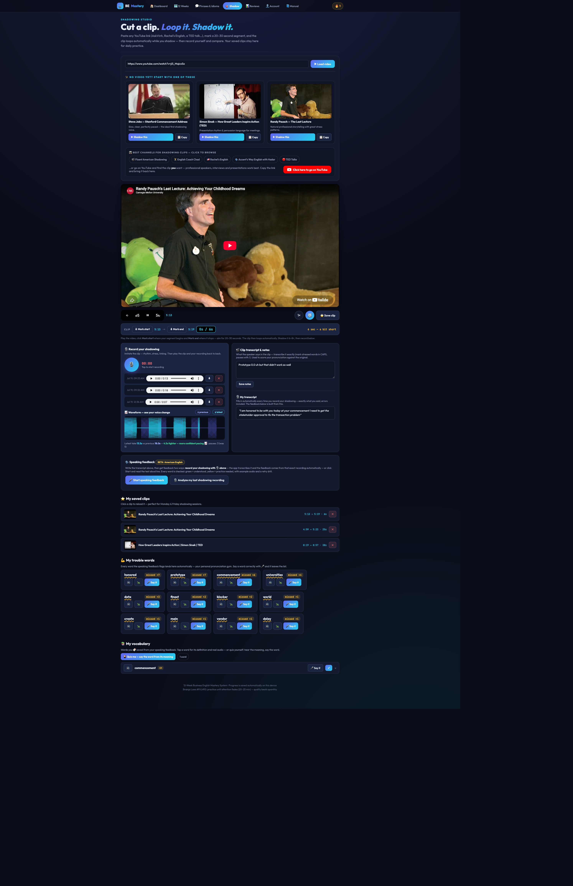
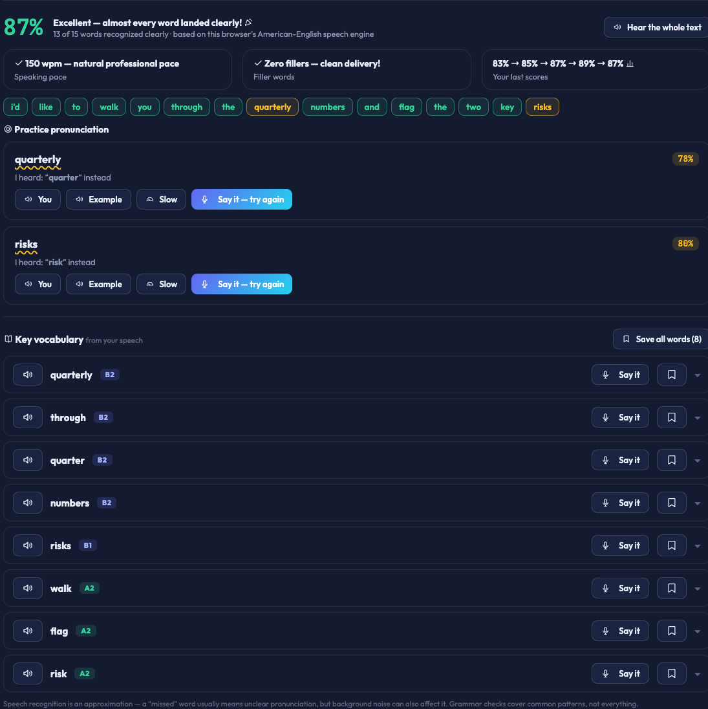
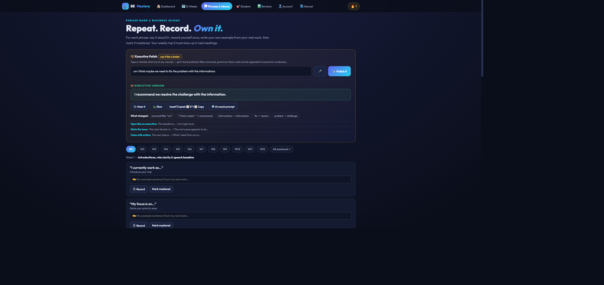
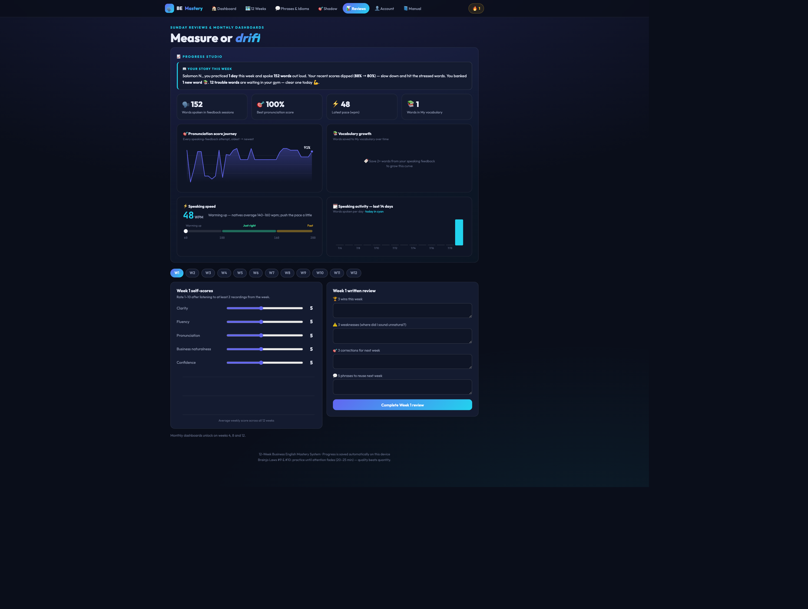
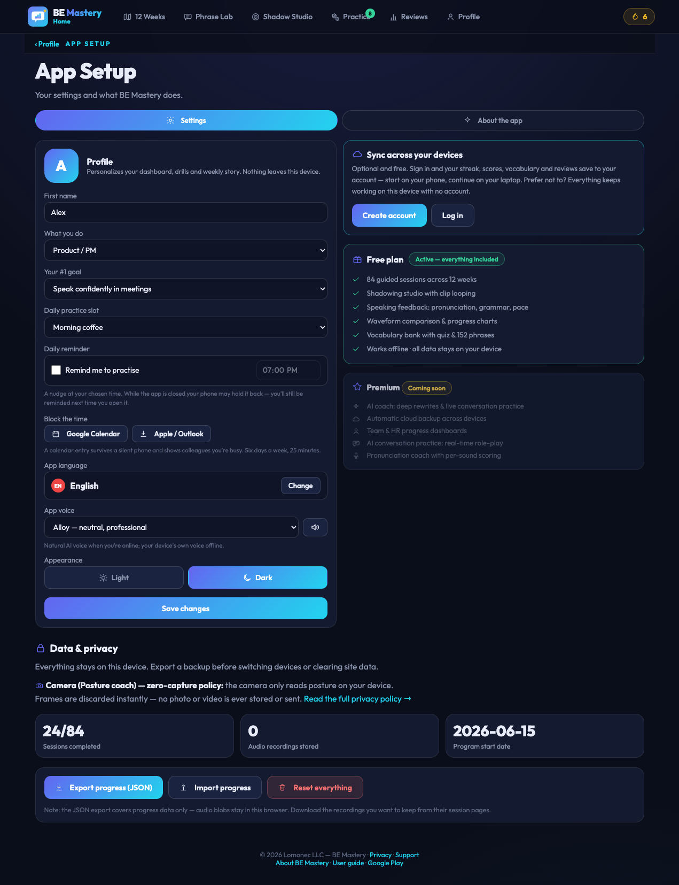

Business English Mastery 12-Week System — Complete User Guide
Everything the app can do, step by step, with screenshots and real examples: guided daily sessions, the Shadowing Studio, AI-style speaking feedback, vocabulary building and progress tracking — all private, all on your device.
1Getting started & onboarding
The app is a complete 12-week training program for professional spoken English: 6 days a week, 25 focused minutes a day, with instant feedback on every recording. Everything is saved automatically on your device.
Open the app in Chrome or Edge (best) — https://salomon1010.github.io/Business-English/. On Android, use the browser menu → Add to Home Screen to install it like a real app (it works offline).
Complete the 60-second welcome: your name → what you do → your #1 goal → your daily practice slot → say one sentence aloud for your baseline score. The whole app personalizes itself around your answers.
Allow microphone access when asked — the recorder and speaking feedback need it.
You land in the 🎯 Shadow tab — pick a starter video and do your first 30-second sprint. That's day 1 done.

The welcome flow: 5 quick steps, ending with your first speaking score.
💡 The golden rule: every session must produce evidence — a recording, a transcript, saved words, or correction notes. If you didn't record or write anything, it wasn't a real session.
2Navigation — desktop & phone
Desktop: tabs across the top, with your 🔥 streak on the right.
Tab
What it's for
🏠 Dashboard
Today's session, progress ring, stats — start here every day
🗺️ 12 Weeks
The full program map: 12 weeks × 7 days
💬 Phrases & Idioms
152 business phrases + the 💼 Executive Polish tool
🎯 Shadow
The practice lab: clips, looping, recorder, feedback, vocabulary
📊 Reviews
Progress Studio charts + Sunday self-reviews
👤 Account
Profile, plan, backup & privacy
📘 Manual
This guide
On your phone, the app switches to a bottom icon bar — like any Android app: Home · Weeks · Shadow · Phrases · Progress · ⋯ More (Account, Manual, About).

Phone view: bottom navigation, everything one tap away.
3Dashboard
Zero decisions: the Dashboard greets you by name, shows your goal and daily slot, and tells you exactly what today's session is.

Today's session card, the progress ring across 3 phases, and your key stats.
Read the "Continue where you left off" card and click Start today's 25-minute session →.
The ring shows your % of 84 sessions across the three phases: Foundation (W1–4) → Workplace Fluency (W5–8) → Executive Communication (W9–12).
4The 12-Week journey

Each card is a week; the 7 dots are its days. Click a week, then a day, to open a session.
Day
Session type
Evidence you produce
Mon 🎧
Pronunciation + shadowing a native clip
Transcript + imitation recording
Tue 🎯
Business speaking drill
Recording v1 → improved v2
Wed 💬
Vocabulary + phrase bank
10 personal sentences + recording
Thu 🧑💼
Meeting simulation / Q&A
Simulated meeting recording
Fri 🔊
Pronunciation + delivery repair
Before/after recording
Sat 🎤
Long-form speaking (3–5 min)
Long recording + review notes
Sun 📊
Weekly review & reset
Scores + 3 wins / weaknesses / corrections
5A daily 25-minute session
One page holds your whole workout: timer, minute-by-minute template, recorder with live transcription, your script, notes and self-score.

A session page: template steps (left), recorder + "My example" + feedback tools (right).
Press ▶ Start on the 25-minute timer and follow the timed template steps, ticking each one off.
Write "🎬 My example — what I plan to say" — your answer in your own words (e.g. your self-introduction). This is the target your recording is scored against.
Press 🎙️ and speak. While you record, the app transcribes you. Aim for 20–60 seconds of real speech — one-second clips can't be analyzed.
Stop → the full feedback report appears (see Section 7): word-by-word score, grammar, vocabulary, pace. Your words also fill "🎙️ My transcript" automatically.
Record a second take — the 📈 waveform shows your new voice layered over the previous one, with a pacing verdict like "4.5s tighter — more confident pacing 📈".
Write your top corrections in notes, self-score 1–10, and ✅ Mark session complete.
📌 Example — Week 1 Tuesday, "Tell me about yourself"
My example:
"I currently work as a data engineer. My focus is on the reporting pipeline. I'm responsible for data quality."
You record it, and the report shows: 95% — one yellow word (responsible), a grammar catch ("I am agree" → "I agree"), pace 132 wpm ✅. You drill the yellow word with 🔊/🎤, record take 2, and the attempt line reads 82% → 95% 📈.
6🎯 Shadowing Studio — the practice lab
Shadowing = speaking along with a native speaker to copy their rhythm, stress and melody. The Studio makes it effortless: cut a 20–30 second clip from any YouTube video and loop it while you shadow.

The Studio: starter videos, channels, the player with clip controls, recorder + feedback, saved clips, trouble words and vocabulary.
Cut and loop a clip
Pick a video: use a ✨ starter card (Steve Jobs, Simon Sinek, Randy Pausch), one of the 📺 curated channels, or paste any YouTube link → ▶ Load video.
Play, then ⬇ Mark start. A live counter appears and counts the seconds — at 20s it turns green ("you can mark the end now ✅"), at 30s it pulses gold.
⬇ Mark end → the clip now loops automatically 🔁. During playback the counter shows your position: 12s / 30s, resetting to 0 every loop.
Navigate inside the clip with ⟲ (restart), ↺5 / 5↻ (jump 5s back/forward — clicks stack), the speed button (1× → .75× → .5×) and 🔁 loop on/off.
⭐ Save clip — saved clips reload with one tap, with your marks, transcript and recordings intact. A refresh also restores your last clip automatically.
🧍 Posture Coach — executive presence while you speak
Click "🧍 Posture coach" under the recorder (Shadow or any session page) and allow the camera.
Sit upright for 3 seconds — the coach calibrates to your upright posture.
Practice normally. A small glowing skeleton avatar (never your video) mirrors you: green = executive posture · yellow = head tilted, raise the phone · orange glow = slouching, shoulders back.
In a dark room, the screen automatically becomes a 💡 ring light to illuminate your face (one tap to turn off). If tracking can't see you, it pauses gracefully and lets you focus on voice.
Stop the coach to get your session result — e.g. "🧍 88% upright" — with advice.
🔒 Zero-capture privacy: camera frames are analyzed on your device and discarded instantly. No video or photo is ever stored or uploaded — only anonymous numeric posture coordinates exist, and they never leave your device.
Shadow and record
Shadow the loop 6–8×: listen → repeat in the gaps → speak with the audio → speak alone.
Write the 🎬 clip transcript (what the speaker says) — mark STRESSED words in CAPS, pauses with /.
Press 🎙️ and shadow one full take. On stop: your words appear in 🎙️ My transcript, and the full speaking-feedback report is generated from that exact recording.
Repeat the clip — every take is an attempt: "This clip · attempt 3 — 80% → 95% → 100% 📈 you're improving!"
7🗣️ Speaking feedback explained
After every recording (or a live "read aloud" with 🎤 Start speaking feedback), the app builds a full report from what you actually said.

The report: score, word chips, practice cards, pace/fillers, attempt history, grammar columns and vocabulary.
Section
What it tells you
Score %
How many of your target words were recognized clearly by the American-English speech engine
Word chips
Green = landed clearly · yellow = practice needed (hover to see what was heard instead)
🎯 Practice cards
For each problem word: 🔈 You (plays that moment from your own recording) · 🔊 Example · 🐢 Slow · 🎤 Say it — try again (turns green at 100% when you nail it)
Pace & fillers
Your words-per-minute vs the native 140–160 zone, and your "um/uh" count
Attempts
Score history for this clip/session with 📈/📉 verdicts
📖 Grammar feedback
Two columns — what you did well (modal verbs, present perfect, phrase-bank phrases used!) and what you can improve ("informations" → information, "I am agree" → I agree…), each with 🔊 hear-the-correct-version
📚 Key vocabulary
Words extracted from your speech with CEFR levels — see Section 8
💡 Speak 20+ seconds. The more you say, the richer the report. And remember it's an approximation: a "missed" word usually means unclear pronunciation, but background noise counts too.
8📚 Vocabulary, trouble words & quiz
Key vocabulary appears in every feedback report — words from your own speech with level badges (A2…C1). Tap a word for its dictionary definition, IPA and real human audio; use 🎤 Say it to test yourself; 🔖 save the good ones (or "Save all words").
⬆️ Level up your words: the app spots casual words you used and suggests the executive upgrade — you said "get" → try "obtain" — with audio and save buttons.
💪 My trouble words (bottom of Shadow): every word the feedback flags collects here automatically. Drill each with 🔊 / 🐢 / 🎤 — pronounce it correctly as many times as you missed it and it's cleared with a 🏆.
📚 My vocabulary + 🎴 Quiz me: your saved words become a deck. The quiz reads you a word's meaning — you must say the word out loud; the app judges both recall and pronunciation.
📌 Example — the quiz
"What word is this? — The people with an interest or concern in a business project."
You press 🎤 and say "stakeholders" → "🏆 correct AND well pronounced!"
9Phrases & 💼 Executive Polish

Executive Polish at the top; the 152-phrase bank below, filtered by week.
💼 Executive Polish — say it like a leader
Type or 🎤 dictate what you'd say casually, then press ✨ Polish it.
Read the executive version — fillers removed, hedging cut ("I think", "maybe", "sorry about that"), grammar fixed, weak words upgraded — with every change listed so you learn the pattern.
🔊 Hear it, 🐢 slow it, 📋 copy it — or press 🤖 AI coach prompt to copy a ready-made coaching prompt (with your sentence inside) for ChatGPT, Claude or Gemini.
📌 Example
"um I think maybe we need to fix the problem with the informations"
→ "I recommend we resolve the challenge with the information."
The phrase bank
10–13 phrases and idioms per week, matched to the theme. For each: say it 5×, 🎙️ record your own sentence, and Mark mastered when it's naturally yours. Sunday's job: pick 5 to use in real meetings next week.
10Reviews & 📈 Progress Studio

Progress Studio on top; Week self-scores and written review below; month dashboards on weeks 4, 8, 12.
📖 Your story this week — an auto-written summary of your practice: days, words spoken, score trend, new vocabulary, trouble words to clear.
The four charts — 🎯 pronunciation score journey · 📚 vocabulary growth · ⚡ speaking-speed gauge (Warming up / Just right / Fast) · 🗓️ words spoken per day. All measured automatically.
Every Sunday: listen to 2 recordings, move the five 1–10 sliders (clarity, fluency, pronunciation, business naturalness, confidence), write 3 wins / 3 weaknesses / 3 corrections, and complete the review.
Weeks 4, 8, 12: fill the Month Dashboard — the big checkpoint that sets the next phase.
11👤 Account, backup & privacy

Profile, plan, and the Data & privacy tools.
Profile: edit your name, role, goal and daily slot anytime — the whole app re-personalizes.
Plan: the Free plan includes everything; Premium (AI coach, cloud accounts, team dashboards) is coming later.
Backup: click Export JSON weekly and keep the file safe; Import restores it on any device. Optional: connect a private GitHub repo for automatic cloud sync of progress and recordings.
Privacy: everything — progress, recordings, transcripts — lives on your device. Nothing is uploaded unless you set up GitHub sync.
⛔ "Reset everything" permanently erases all progress and recordings on this device. Export a backup first.
12Your weekly routine at a glance
Day
Do (25 min)
Evidence
Mon
🎯 Shadow tab: pick a clip → transcribe → loop & shadow 6–8× → record → feedback
Transcript + recording + trouble words
Tue
Speaking drill: write "My example" → record v1 → feedback → record v2
2 recordings + attempt scores
Wed
Phrase bank: study the week's phrases → 10 personal sentences → record best run
Phrases recorded + words saved
Thu
Meeting simulation → review → redo cleaner
Meeting recording ×2
Fri
Delivery repair: worst take → fix pace/stress → compare waveforms
Before/after waveform
Sat
Long-form talk 3–5 min → review → redo weakest section
Long recording
Sun
📊 Reviews: story + charts → sliders → 3×3 written review → pick 5 phrases
Weekly review saved
13FAQ & troubleshooting
The microphone / speaking feedback doesn't work
Use Chrome or Edge — speech recognition needs their engine (Safari partially works; Firefox doesn't). Click the 🔒 icon in the address bar → Microphone → Allow → reload. On macOS also check System Settings → Privacy → Microphone.
I refreshed and my clip/recordings seemed gone
Fixed — the Shadow tab now restores your last clip, marks, transcript and recordings automatically after a refresh. Recordings always survive refreshes; they live in your browser's database.
My progress disappeared
You probably opened a different browser or a private window. Return to your usual browser, or restore your JSON backup (👤 Account). This is why the weekly export habit matters.
My recording says 0:00 / can't be analyzed
It was too short. Speak for at least 20 seconds — feedback quality grows with every sentence you say. (Fresh recordings can display "0:00" until you press play — that's a browser quirk, not data loss.)
Can I install it as an app?
Yes — on Android Chrome: menu ⋮ → Add to Home Screen / Install app. It opens full-screen with the bottom navigation and works offline.
Does the Posture Coach record me?
No. The camera feed is analyzed frame-by-frame on your device and each frame is immediately discarded. No video or image is ever saved or transmitted — only anonymous posture coordinates (numbers) exist while the coach runs. Turning the coach off releases the camera completely.
Does my voice go to a server?
Recordings stay on your device. The speech engine used for transcription is your browser's own (Chrome may process audio on Google's servers as part of its speech service); dictionary definitions are fetched anonymously. Nothing else leaves your device unless you enable GitHub sync.
In what order should I do the weeks?
In order, 1 → 12. Phases build on each other, and weeks 4, 8, 12 end with month dashboards.